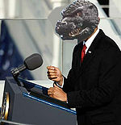
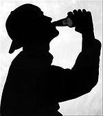
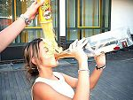

Chungo
 De: La Frikipedia, la enciclopedia extremadamente seria.
De: La Frikipedia, la enciclopedia extremadamente seria.
| De la serie tribus urbanas del mundo:
|
| Chungo
|
Ejemplo de la tribu

|
| Retrato robot de un Chungo
|
|
| Hábitat
|
Cualquier sitio civilizado
|
| Inteligencia
|
Nula
|
| Frase favorita
|
Dame la pasta o te rajo
|
| ¿Peligroso?
|
solos, mucho, en manada; dominan este mundo
|
| Obsesión
|
Chingar rabanos (chungos chingar jajajaja)
|
| Notas
|
segun ellos: 2+2 igual a un payaso pirata con un lanzallamas, asique deducid vosotros...
|
1.Dicese de los tipejos, normalmente, cortos de talla obsesionados con decir gilipolleces que no vienen al cuento y dominar el mundo rajando a quien se ponga por delante si se motivan. Tienen una inteligencia equivalente a la de un elefante con colicos de sindrome de la polla floja, eso sin exagerar.
2.Dicese de una cosa difícil
Historia
La mentalidad de los chungos fué creada por gilipollescus agonicus que se metieron en las humildes cabezas de los desgraciados de por alli. Eso y con la reproduccion Humano-perruna, se han ido expandiendo y ahora son la quinta potencia mundial por detrás de Delfinolandia y cuéntanoslo.
Localizacion general
Los chungos estan por todas partes, incluso detrás de ti, pero abundan mas en:
- En el cole: Es ese tipico extranjero con bigote que te amenaza con violar a tu madre pero en realidad se asusta hasta de Drácula, que miedica.
- En cualquier tienda de juegos: Es aquel que normalmente va en manada y se rie de todos los juegos que ve. Casi siempre se va con las manos vacias o con el juego mas maricón de todos.
- A punto de entrar a tu casa: ¡CORRE! Si te raja con su navaja de Albacete, ¡te convertirás en un gañán!
Para evitar ser un chungo, sigue los pasos que te damos a continuacion:
Cómo evitar serlo
- 1.Debes vivir lejos de Albacete, (mas que nada porque ahi hacen unas navajas de la ostia.)
- 1.2.Si vives en Albacete no desesperes, aún puedes evitarlo.
mentira
- 2.Debes tener un Bazooka 9m con aleacion de tungsteno remachado con proyectiles de 800 mG (megatones). Pero para la gente normal, basta con una 9mm.
- 3.Debes saber dar unas ostias equivalentes a las de un Chuk Norris y medio (esque dos seria mucho.)
- 4.Debes asesinar a tu hermano de la forma mas cruel y dolorosa que exista. Ups, perdon, esto es de mi lista de tareas...
- 4.Acomodarte el cuello despues de cada ostia.
- 5.Cuando acabes la matanza debes decir: "Sayonara baby".
- 6.Decir "gracias por no matarme y haberos dejado matar" porque hay que ser educado.
Armamento de los chungos
Las armas de los chungos son muy variadas y destructivas. Tienen:
- Navaja 9mm
- Navaja 10mm
- Navaja 11mm, y asi sucesivamente hasta:
- Navaja 100 años luz
- Lenguaje soez
- Insultos "tu madre estan... que..." Ejemplo: "Tu madre es tan peluda, que el unico idioma que habla es el wookie..."
- Parkinson ostia: Es una tecnica de combate que solo ellos y parkinson. Muy pocos (por no decir ninguno) lo han conseguido.
Vestimenta
Los chungos tienen una manera de vestir muy caracteristica. Este es el conjunto mas usado:
- Cabezota: aqui son un tanto mas normales. Se ponen una gorra color negro[1] y una cruz de colgante.
- Parte superior: Se ponen debajo la camisa de tirantes y luego por encima se pueden poner perfectamente una chequeta de chándal que ponga "mundial 84".
- Parte inferior: Se ponen unos pantalones de pana (junto con lo de arriba) o esos pantalones tipo campana.
- Zapatos: Se ponen zapatos muy gays...
- Gallumbos: Mejor no hablemos, en serio...
Cualidades fisicas y enfermedades
 Godzilla, candidato a la presidencia de Chungolandia

Se rumorea que Mario es un chungo, y consiguio mojar el mamón.
Una de las enfermedades de los chungos consiste en el "sindrome de la polla floja" esto se debe a que los testiculos se calientan, gracias a que tienen los pantalones de chandal que no se la quitan ni en Agosto,y todo el mundo sabe que los cataplines al calentarse, matan esperchungoides (si, si, tienen sus propios espermatozoides)[2] lo que produce una disfuncion erectil de la ostia y no quiere que se la meta ni una puta.
 Chungo haciendo uno de sus hobbies
 También hay chungas. Como este especimen que se adicta a dos cosas a la vez
A pesar de que afecta cada año a 46.000.000 de chungos, a los cientificos se la sopla, y hacen bien.
Los chungos tienen un organo mas que cualquier otro mortal, este es el "tercer cojon" Es un organo que regula la temperatura de los coito[3]. Cabe decir que las mujeres penetradas por un chungo, acaban siendo aliens de la 3ª dimension, o sea, chungas.
Los cienteificos afirman que un 99% de su cuerpo esta formado por pelos de macarron, lo que demuestra que no son humanos. El crebro es verde y esta formado por gases.
Suelen llevar gafas de sol, adquiridas en el top manta, incluso de noche, pudiendo incluso ver. Su cráneo parece ser más grueso, ya que casi ningún chungo utiliza el casco.
Notas
- ↑ Normalmente
- ↑ Son especiales porque resisten mas al calor, pero aun asi...
- ↑ este organo es de los menos usados ya que las tias, piensan y no se dejan follar por cualquiera...
Autor(es):
- Cabronias
- Genericool
- --PoRtE--
- BertaBp
- Th´albert
Frikipedia 2005-2016, Licencia
GFDL 1.2 - Extraído por FrikiLeaks